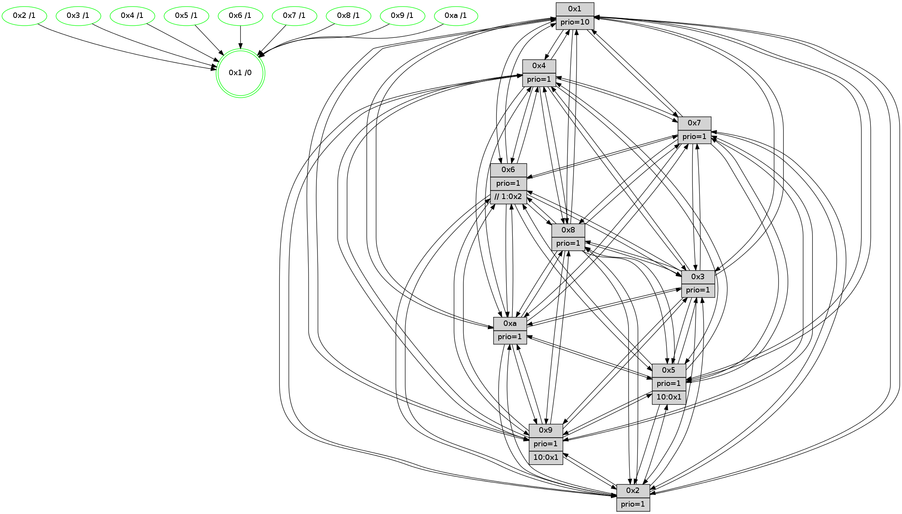

>> << IDX [start] -100 -25 -5 +0 +5 +25 +100 [1530.19081903]
 Previous packets
----------------------------------------------------------------------
1525.462032 beacon01(faad) #0 coord=01,02,03,04,05,06,07,0a,09,08 cycle=688.0ms assoc
-- color-indic=1 64 27 68
1525.472015 beacon02(faad) #0 coord=01,02,03,04,05,06,07,0a,09,08 cycle=688.0ms assoc 64 b4 59
1525.482014 beacon03(faad) #0 coord=01,02,03,04,05,06,07,0a,09,08 cycle=688.0ms assoc 64 ce 14
1525.492015 beacon04(faad) #0 coord=01,02,03,04,05,06,07,0a,09,08 cycle=688.0ms assoc 64 b9 fe
1525.502015 beacon05(faad) #0 coord=01,02,03,04,05,06,07,0a,09,08 cycle=688.0ms assoc 64 c3 b3
1525.512014 beacon06(faad) #0 coord=01,02,03,04,05,06,07,0a,09,08 cycle=688.0ms assoc 64 4d 64
1525.522017 beacon07(faad) #0 coord=01,02,03,04,05,06,07,0a,09,08 cycle=688.0ms assoc 64 37 29
1525.532022 beacon0a(faad) #0 coord=01,02,03,04,05,06,07,0a,09,08 cycle=688.0ms assoc 64 46 22
1525.552021 beacon08(faad) #0 coord=01,02,03,04,05,06,07,0a,09,08 cycle=688.0ms assoc 64 b2 b8
1525.563248 [Hello(9): seq=916 sym=2,5,3,4,7,6,8,10,1 sysInfo=hasWarning stat=2:1,5,13,13/5:5,10,5,0/3:15,11,8,7/4:15,3,5,3/7:9,12,5,5/6:2,7,10,1/8:13,11,3,9/10:1,2,7,0/1:11,3,12,1]
1525.566263 [Hello(10): seq=905 sym=6,2,3,8,7,5,9,4,1 sysInfo=hasWarning stat=6:4,4,9,5/2:2,12,11,2/3:9,3,2,15/8:7,7,15,6/7:3,0,12,10/5:8,14,4,3/9:1,11,13,2/4:4,3,9,3/1:12,11,11,1]
1525.569935 [Hello(7): seq=972 sym=2,3,5,6,8,4,9,10,1 sysInfo=hasWarning stat=2:0,3,7,6/3:6,12,11,6/5:7,12,9,5/6:10,9,8,13/8:8,0,1,1/4:2,4,1,0/9:1,12,3,3/10:12,8,0,7/1:1,4,7,0]
1525.573272 [Color(1) seq=652 @0:0 prio=10]
1525.574872 [Hello(8): seq=916 sym=5,2,3,9,6,4,10,1 sysInfo=hasWarning stat=5:5,15,5,3/2:12,15,0,14/3:4,1,5,6/9:14,3,6,6/6:12,0,2,1/4:12,5,11,2/10:6,0,12,5/1:9,5,12,0]
1525.577895 [Color(8) seq=571 @0:0 prio=1]
1525.580257 [Hello(4): seq=972 sym=5,6,2,3,9,10,1 asym=7 sysInfo=hasWarning stat=5:3,12,7,4/6:9,7,3,2/2:11,8,10,3/3:7,2,2,1/9:2,11,11,3/10:6,0,3,14/1:3,12,12,1/7:2,5,0,0]
1525.583673 [Color(4) seq=511 @0:0 prio=1]
1525.586580 [Color(7) seq=500 @0:0 prio=1]
----------------------------------------------------------------------
1526.250164 beacon01(faad) #0 coord=01,02,03,04,05,06,07,0a,09,08 cycle=688.0ms assoc
-- color-indic=1 64 e3 66
1526.260146 beacon02(faad) #0 coord=01,02,03,04,05,06,07,0a,09,08 cycle=688.0ms assoc 64 70 57
1526.270145 beacon03(faad) #0 coord=01,02,03,04,05,06,07,0a,09,08 cycle=688.0ms assoc 64 0a 1a
1526.280145 beacon04(faad) #0 coord=01,02,03,04,05,06,07,0a,09,08 cycle=688.0ms assoc 64 7d f0
1526.290146 beacon05(faad) #0 coord=01,02,03,04,05,06,07,0a,09,08 cycle=688.0ms assoc 64 07 bd
1526.300146 beacon06(faad) #0 coord=01,02,03,04,05,06,07,0a,09,08 cycle=688.0ms assoc 64 89 6a
1526.310148 beacon07(faad) #0 coord=01,02,03,04,05,06,07,0a,09,08 cycle=688.0ms assoc 64 f3 27
1526.320152 beacon0a(faad) #0 coord=01,02,03,04,05,06,07,0a,09,08 cycle=688.0ms assoc 64 82 2c
1526.340153 beacon08(faad) #0 coord=01,02,03,04,05,06,07,0a,09,08 cycle=688.0ms assoc 64 76 b6
1526.352322 [Hello(1): seq=882 sym=4,2,9,5,10,3,8,6,7 sysInfo=coloring-mode-on,ColoringModeRequestCalled stat=4:4,15,9,4/2:5,0,1,7/9:10,12,2,3/5:0,8,9,11/10:5,1,11,8/3:15,1,9,13/8:14,11,4,7/6:8,10,5,3/7:3,15,12,3]
1526.355359 [Color(9) seq=516 @0:0 prio=1 >10.@1,1.@2,1.@3,1.@4]
1526.357102 [Hello(3): seq=973 sym=1,7,6,2,4,8,9,10,5 sysInfo=hasWarning stat=1:9,7,14,0/7:7,14,13,0/6:1,5,1,0/2:0,3,0,0/4:10,2,15,14/8:13,14,6,9/9:2,4,7,2/10:3,6,12,5/5:10,5,7,3]
1526.360825 [Color(10) seq=562 @0:0 prio=1]
1526.362908 [Hello(2): seq=969 sym=4,5,7,6,3,9,8,10,1 sysInfo=hasWarning stat=4:6,15,8,14/5:9,6,11,4/7:7,1,12,3/6:2,5,1,0/3:10,2,9,2/9:2,10,3,11/8:1,13,5,0/10:3,8,2,11/1:3,8,6,0]
1526.365690 [Hello(5): seq=973 sym=7,6,4,3,1,9,8,10,2 sysInfo=hasWarning stat=7:1,2,14,1/6:10,4,3,0/4:12,9,4,0/3:8,9,5,3/1:9,10,5,0/9:7,5,10,12/8:5,0,4,8/10:1,14,13,9/2:9,0,3,9]
1526.368364 [Hello(6): seq=973 sym=3,2,5,4,7,9,8,10,1 sysInfo=hasWarning stat=3:9,14,10,0/2:13,5,4,1/5:0,4,0,6/4:6,10,8,9/7:3,2,6,1/9:8,9,11,12/8:7,7,1,10/10:11,8,3,13/1:12,10,12,1]
1526.370892 [Color(5) seq=509 @0:0 prio=1 >10.@1,1.@2,1.@3,1.@4]
1526.374142 [Color(2) seq=549 @0:0 prio=1]
1526.381039 [Color(6) seq=605 @0:0 prio=1 >>1.@2,1.@3,1.@4]
1526.382841 [Color(3) seq=602 @0:0 prio=1]
----------------------------------------------------------------------
1527.038295 beacon01(faad) #0 coord=01,02,03,04,05,06,07,0a,09,08 cycle=688.0ms assoc
-- color-indic=1 64 5f 63
1527.048277 beacon02(faad) #0 coord=01,02,03,04,05,06,07,0a,09,08 cycle=688.0ms assoc 64 cc 52
1527.058278 beacon03(faad) #0 coord=01,02,03,04,05,06,07,0a,09,08 cycle=688.0ms assoc 64 b6 1f
1527.068278 beacon04(faad) #0 coord=01,02,03,04,05,06,07,0a,09,08 cycle=688.0ms assoc 64 c1 f5
1527.078279 beacon05(faad) #0 coord=01,02,03,04,05,06,07,0a,09,08 cycle=688.0ms assoc 64 bb b8
1527.088278 beacon06(faad) #0 coord=01,02,03,04,05,06,07,0a,09,08 cycle=688.0ms assoc 64 35 6f
1527.098279 beacon07(faad) #0 coord=01,02,03,04,05,06,07,0a,09,08 cycle=688.0ms assoc 64 4f 22
1527.108284 beacon0a(faad) #0 coord=01,02,03,04,05,06,07,0a,09,08 cycle=688.0ms assoc 64 3e 29
1527.128283 beacon08(faad) #0 coord=01,02,03,04,05,06,07,0a,09,08 cycle=688.0ms assoc 64 ca b3
1527.140110 [Hello(10): seq=906 sym=6,2,3,8,7,5,4,1 sysInfo=hasWarning stat=6:5,5,9,5/2:3,13,11,2/3:9,4,2,15/8:8,8,15,6/7:4,1,12,10/5:8,15,4,3/4:5,4,9,3/1:13,12,12,1]
1527.143291 [Color(1) seq=653 @0:0 prio=10]
1527.145035 [STC(10)->1 #0.272 tree-change,inconsistent-stability,stable,to-color d=1]
1527.146346 [Hello(4): seq=973 sym=5,6,2,3,9,10,1 sysInfo=hasWarning stat=5:4,13,7,4/6:10,8,3,2/2:12,9,10,3/3:8,3,2,1/9:3,12,11,3/10:7,1,3,14/1:4,12,12,1]
1527.149212 [Color(4) seq=512 @0:0 prio=1]
1527.150788 [Hello(9): seq=917 sym=2,5,3,4,7,6,8,10,1 sysInfo=hasWarning stat=2:2,6,13,13/5:6,11,5,0/3:0,12,8,7/4:0,4,5,3/7:10,13,5,5/6:3,8,10,1/8:14,12,3,9/10:2,3,7,0/1:12,4,12,1]
1527.157173 [Hello(8): seq=917 sym=5,2,3,9,6,4,10,1 sysInfo=hasWarning stat=5:6,0,5,3/2:13,0,0,14/3:5,2,5,6/9:15,4,6,6/6:13,1,2,1/4:13,6,11,2/10:7,1,12,5/1:10,5,12,0]
1527.160491 [Color(8) seq=572 @0:0 prio=1]
1527.164343 [Hello(7): seq=973 sym=2,3,5,6,8,4,9,10,1 sysInfo=hasWarning stat=2:1,4,7,6/3:7,13,11,6/5:7,13,9,5/6:11,10,8,13/8:8,0,1,1/4:2,4,1,0/9:2,13,3,3/10:13,9,0,7/1:2,4,7,0]
1527.168770 [Color(7) seq=501 @0:0 prio=1]
----------------------------------------------------------------------
1527.826427 beacon01(faad) #0 coord=01,02,03,04,05,06,07,0a,09,08 cycle=688.0ms assoc
-- color-indic=1 64 6b 7b
1527.836410 beacon02(faad) #0 coord=01,02,03,04,05,06,07,0a,09,08 cycle=688.0ms assoc 64 f8 4a
1527.846409 beacon03(faad) #0 coord=01,02,03,04,05,06,07,0a,09,08 cycle=688.0ms assoc 64 82 07
1527.856410 beacon04(faad) #0 coord=01,02,03,04,05,06,07,0a,09,08 cycle=688.0ms assoc 64 f5 ed
1527.866410 beacon05(faad) #0 coord=01,02,03,04,05,06,07,0a,09,08 cycle=688.0ms assoc 64 8f a0
1527.876410 beacon06(faad) #0 coord=01,02,03,04,05,06,07,0a,09,08 cycle=688.0ms assoc 64 01 77
1527.886409 beacon07(faad) #0 coord=01,02,03,04,05,06,07,0a,09,08 cycle=688.0ms assoc 64 7b 3a
1527.896414 beacon0a(faad) #0 coord=01,02,03,04,05,06,07,0a,09,08 cycle=688.0ms assoc 64 0a 31
1527.916415 beacon08(faad) #0 coord=01,02,03,04,05,06,07,0a,09,08 cycle=688.0ms assoc 64 fe ab
1527.928643 [Hello(1): seq=883 sym=4,2,9,5,10,3,8,6,7 sysInfo=coloring-mode-on,ColoringModeRequestCalled stat=4:5,0,9,4/2:5,1,1,7/9:11,12,2,3/5:0,9,9,11/10:6,1,12,8/3:15,2,9,13/8:15,12,4,7/6:9,11,5,3/7:4,0,12,3]
1527.931685 [Color(9) seq=517 @0:0 prio=1 >10.@1,1.@2,1.@3,1.@4]
1527.933493 [Hello(2): seq=970 sym=4,5,7,6,9,8,10,1 sysInfo=hasWarning stat=4:7,0,8,14/5:9,6,11,4/7:8,2,12,3/6:2,6,1,0/9:3,10,3,11/8:2,14,5,0/10:4,8,3,11/1:4,9,6,0]
1527.936935 [Color(10) seq=563 @0:0 prio=1]
1527.938437 [Color(2) seq=550 @0:0 prio=1]
1527.940968 [Hello(3): seq=974 sym=1,7,6,2,4,8,9,10,5 sysInfo=hasWarning stat=1:10,8,14,0/7:8,15,13,0/6:1,5,1,0/2:0,3,0,0/4:11,3,15,14/8:14,15,6,9/9:3,4,7,2/10:4,6,13,5/5:10,5,7,3]
1527.943609 [Hello(6): seq=974 sym=3,2,5,4,7,9,8,10,1 sysInfo=hasWarning stat=3:9,15,10,0/2:13,5,4,1/5:0,4,0,6/4:7,11,8,9/7:4,3,6,1/9:9,10,11,12/8:8,8,1,10/10:12,8,4,13/1:13,11,12,1]
1527.946030 [Color(3) seq=603 @0:0 prio=1]
1527.948130 [Color(6) seq=606 @0:0 prio=1 >>1.@2,1.@3,1.@4]
1527.951603 [Hello(5): seq=974 sym=7,6,4,3,1,9,8,10,2 sysInfo=hasWarning stat=7:2,3,14,1/6:10,5,3,0/4:13,10,4,0/3:8,10,5,3/1:10,11,5,0/9:8,5,10,12/8:6,1,4,8/10:2,14,14,9/2:9,1,3,9]
1527.955368 [Color(5) seq=510 @0:0 prio=1 >10.@1,1.@2,1.@3,1.@4]
----------------------------------------------------------------------
1528.614559 beacon01(faad) #0 coord=01,02,03,04,05,06,07,0a,09,08 cycle=688.0ms assoc
-- color-indic=1 64 d7 7e
1528.624542 beacon02(faad) #0 coord=01,02,03,04,05,06,07,0a,09,08 cycle=688.0ms assoc 64 44 4f
1528.634543 beacon03(faad) #0 coord=01,02,03,04,05,06,07,0a,09,08 cycle=688.0ms assoc 64 3e 02
1528.644543 beacon04(faad) #0 coord=01,02,03,04,05,06,07,0a,09,08 cycle=688.0ms assoc 64 49 e8
1528.654540 beacon05(faad) #0 coord=01,02,03,04,05,06,07,0a,09,08 cycle=688.0ms assoc 64 33 a5
1528.664542 beacon06(faad) #0 coord=01,02,03,04,05,06,07,0a,09,08 cycle=688.0ms assoc 64 bd 72
1528.674543 beacon07(faad) #0 coord=01,02,03,04,05,06,07,0a,09,08 cycle=688.0ms assoc 64 c7 3f
1528.684546 beacon0a(faad) #0 coord=01,02,03,04,05,06,07,0a,09,08 cycle=688.0ms assoc 64 b6 34
1528.704547 beacon08(faad) #0 coord=01,02,03,04,05,06,07,0a,09,08 cycle=688.0ms assoc 64 42 ae
1528.715746 [Hello(9): seq=918 sym=2,5,3,4,7,6,8,10,1 sysInfo=hasWarning stat=2:3,7,13,13/5:7,12,5,0/3:1,12,8,7/4:0,4,5,3/7:11,14,5,5/6:4,9,10,1/8:15,13,3,9/10:2,4,7,0/1:13,4,12,1]
1528.719887 [Color(1) seq=654 @0:0 prio=10]
1528.721960 [Hello(8): seq=918 sym=5,2,3,7,9,6,4,10,1 sysInfo=hasWarning stat=5:7,1,5,3/2:14,1,0,14/3:6,2,5,6/7:0,1,0,0/9:15,5,6,6/6:14,2,2,1/4:13,6,11,2/10:8,2,12,5/1:11,6,12,0]
1528.724737 [Hello(7): seq=974 sym=2,3,5,6,8,4,9,10,1 sysInfo=hasWarning stat=2:2,5,7,6/3:8,13,11,6/5:8,14,9,5/6:12,11,8,13/8:8,0,1,1/4:2,4,1,0/9:2,14,3,3/10:14,10,0,7/1:3,5,7,0]
1528.727472 [Color(8) seq=573 @0:0 prio=1]
1528.729472 [Color(7) seq=502 @0:0 prio=1]
1528.732394 [Hello(10): seq=907 sym=6,2,3,8,7,5,9,4,1 sysInfo=hasWarning stat=6:6,6,9,5/2:3,14,11,2/3:10,4,2,15/8:9,9,15,6/7:5,2,12,10/5:9,0,4,3/9:0,0,0,0/4:6,5,9,3/1:14,12,12,1]
1528.737158 [Hello(4): seq=974 sym=5,8,6,2,3,9,7,10,1 sysInfo=hasWarning stat=5:5,14,7,4/8:0,1,0,0/6:11,9,3,2/2:13,10,10,3/3:9,3,2,1/9:4,13,11,3/7:0,1,0,0/10:8,2,3,14/1:5,13,12,1]
1528.739978 [Color(4) seq=513 @0:0 prio=1]
----------------------------------------------------------------------
1529.402689 beacon01(faad) #0 coord=01,02,03,04,05,06,07,0a,09,08 cycle=688.0ms assoc
-- color-indic=1 64 13 70
1529.412671 beacon02(faad) #0 coord=01,02,03,04,05,06,07,0a,09,08 cycle=688.0ms assoc 64 80 41
1529.422673 beacon03(faad) #0 coord=01,02,03,04,05,06,07,0a,09,08 cycle=688.0ms assoc 64 fa 0c
1529.432674 beacon04(faad) #0 coord=01,02,03,04,05,06,07,0a,09,08 cycle=688.0ms assoc 64 8d e6
1529.442672 beacon05(faad) #0 coord=01,02,03,04,05,06,07,0a,09,08 cycle=688.0ms assoc 64 f7 ab
1529.452672 beacon06(faad) #0 coord=01,02,03,04,05,06,07,0a,09,08 cycle=688.0ms assoc 64 79 7c
1529.462673 beacon07(faad) #0 coord=01,02,03,04,05,06,07,0a,09,08 cycle=688.0ms assoc 64 03 31
1529.472678 beacon0a(faad) #0 coord=01,02,03,04,05,06,07,0a,09,08 cycle=688.0ms assoc 64 72 3a
1529.482677 beacon09(faad) #0 coord=01,02,03,04,05,06,07,0a,09,08 cycle=688.0ms assoc 64 fc ed
1529.492678 beacon08(faad) #0 coord=01,02,03,04,05,06,07,0a,09,08 cycle=688.0ms assoc 64 86 a0
1529.505543 [Hello(1): seq=884 sym=4,2,9,5,10,3,8,6,7 sysInfo=coloring-mode-on,ColoringModeRequestCalled stat=4:6,1,9,4/2:6,2,1,7/9:12,13,2,3/5:1,10,9,11/10:7,2,12,8/3:0,2,9,13/8:0,13,4,7/6:10,12,5,3/7:5,1,12,3]
1529.512059 [Color(5) seq=511 @0:0 prio=1 >10.@1,1.@2,1.@3,1.@4]
1529.514155 [Hello(2): seq=971 sym=4,5,7,6,3,9,8,10,1 sysInfo=hasWarning stat=4:8,1,8,14/5:10,7,11,4/7:9,3,12,3/6:3,7,1,0/3:0,0,0,0/9:4,10,3,11/8:3,15,5,0/10:5,8,3,11/1:5,10,6,0]
1529.518258 [Color(2) seq=551 @0:0 prio=1]
1529.520177 [Hello(3): seq=975 sym=1,7,6,2,4,8,9,10,5 sysInfo=hasWarning stat=1:11,9,14,0/7:9,0,13,0/6:1,6,1,0/2:0,3,0,0/4:12,4,15,14/8:15,0,6,9/9:4,4,7,2/10:5,6,13,5/5:11,6,7,3]
1529.523330 [Color(3) seq=604 @0:0 prio=1]
1529.525569 [Color(10) seq=564 @0:0 prio=1]
1529.530202 [Color(6) seq=607 @0:0 prio=1 >>1.@2,1.@3,1.@4]